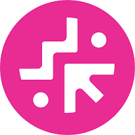
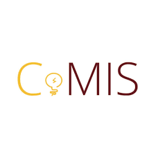

Case Studies
A deeper look into how I analyze problems, ideate solutions, and craft clear, intuitive design experiences.


A deeper look into how I analyze problems, ideate solutions, and craft clear, intuitive design experiences.